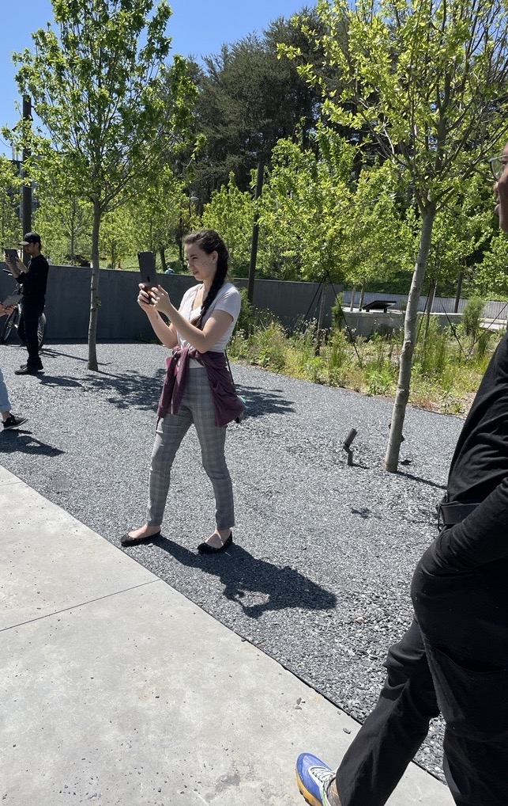
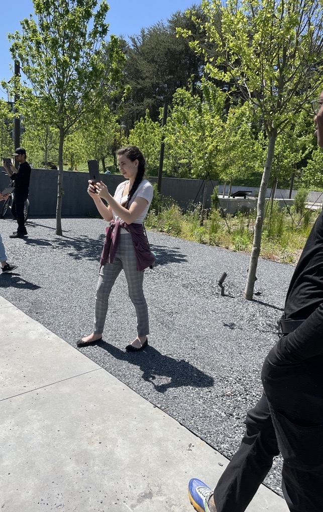

The Pickrick Protests
2021-Present
AR | C#, Unity, Blender
Production Team
Janet Murray (Executive Producer)
Angela Dai (Lead Programmer)
Joy Dang (Programmer)
Adithya Chimalakonda (Animator)
Yuchen Zhao (UX Researcher)
Brandy Pettijohn (Historical Researcher)
Design Team
Hannah J Baumann
Rachel Ann Baker
Deborah S Cho
Eun Lim Kim
Zhiyong Kong
Simin Nasiri
Sadie Elise Palmer
Daniel J Tsiu
Xinyue Zhang
Yue Zhu
Historical Consultants
Karsheik Sims-Alvarado (Asst. Morehouse)
Todd Michney (Assoc. Georgia Tech)
The Pickrick project is an interactive location-based AR installation that recreates the 1965 Atlanta Pickrick Protests produced by GT DILAC.
After the passing of the Civil Rights Act, three African American activists, Charles Wells, Albert Dunn, and Woodrow Willis, were denied entry to the Pickrick restaurant. This restaurant was owned by Lester Maddox, a segregationist and future governor of Georgia. In response these activists launched a series of protests to which Maddox responded with violence and refused to integrate The Pickrick. These events became the basis for the one of the first law suits filed under the Civil Rights Act by the NAACP.
In 1966 after it closed, Georgia Tech purchased the restaurant. In 2008, Tech demolished it to build a green space, and now in it's place stands a memorial plaza to the protests.Design & Development
I joined the team in the second year of the project's development as a programmer and am now the lead programmer and project manager. This project has been a huge undertaking, and I've been lucky to work with an interdisciplinary team of designers, historians, and UX researchers. This project is developed in Unity and designed for an ipad or tablet
For this project, we really wanted to explore the capabilities of AR as a storytelling media. We had 2 main goals: reduce the reliance on traditional 2D UI, and take advantage of the physical space.
Converting content for AR
For the experience we wanted to avoid using 2D screen formats as that would defeat the purpose of AR aspect. However, we still had to convey a lot of historical context to the user. To address this challenge, the design team created historical cards that could be digitally overlayed on the plaza's architecture. By anchoring these cards physically to planes instead of using a HMD screen, we were able to reduce the text jitter/movement and create a better reading experience for the user. I implemented this interaction using colliders to determine the user's position and AR raycasts to detect and track the physical planes.
3D Animation
We also recreated the events from the protests' video footage into 3D animations. With these 3D recreations, users can relive the experience themselves and explore the event from any location. Since Georgia Tech owns the land where the events occurred, we are able to superimpose these animations onto the original locations, effectively bringing the past back into the present. The 3D models create a sense of presence to the historical scene that cannot be fully captured by videos or pictures. When exploring the scene below, user testers described the crowd as "claustrophobic" and some even became uncomfortable as they had to "push" their way through it.
The AR format also allows the use of 3D audio and sound design. By using the actual audio of the events, we can increase the user's sense of immersion in the experience. The use of audio also helped us to convey additional aspects of the story, reducing the need for additional text and the reliance on 2D screen content.
User Testing
During user testing, many users stated that they enjoyed the sense of agency that AR gave them and were surprised by how immersive the experience was. Many stated that the the ability to move around the AR recreations was their favorite part of the app.
 

I was surprised by their level of immersion as we were only using an ipad to run the application. We decided to use mobileAR to increase the app's accessibility, but believed that we were sacrificing some of the complete immersion offered by a headset experience. Despite the ability to see around the ipad, the user seemed focus solely on the screen and ignore anything else, much like when watching a movie. During testing, we often had to steer users away from the trees and lampposts as they would walk right into them while exploring the site.
Conclusion
This project has given me the opportunity to explore diverse AR problem spaces and engage in compelling discussions around nonlinear storytelling, user agency, and spatial design. I learned that AR storytelling requires a unique approach that differs from traditional media. We cannot simply adapt the formats of traditional media to AR, but rather need to approach development in an AR-centric manner. While the AR format may not be suitable for all stories, it can greatly elevate the user's emotional experience and understanding of the right ones.